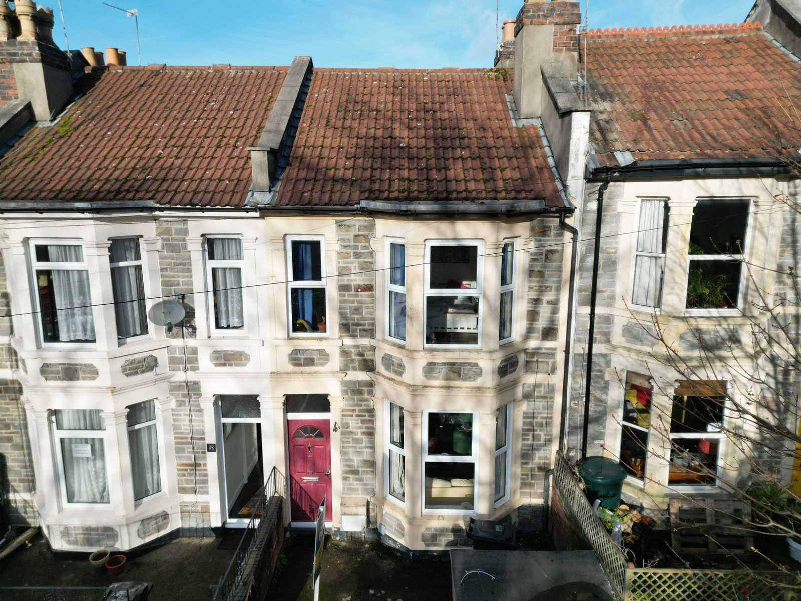
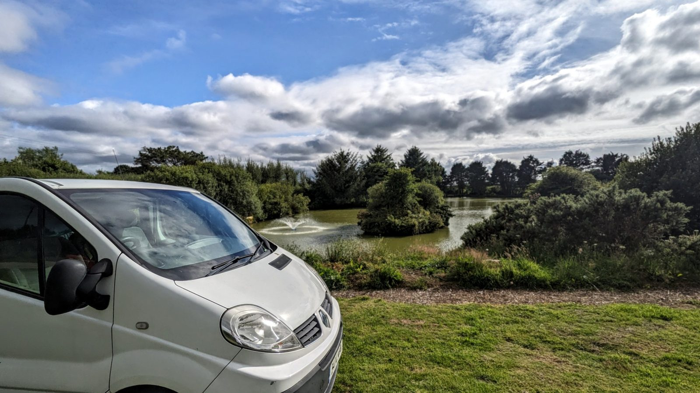
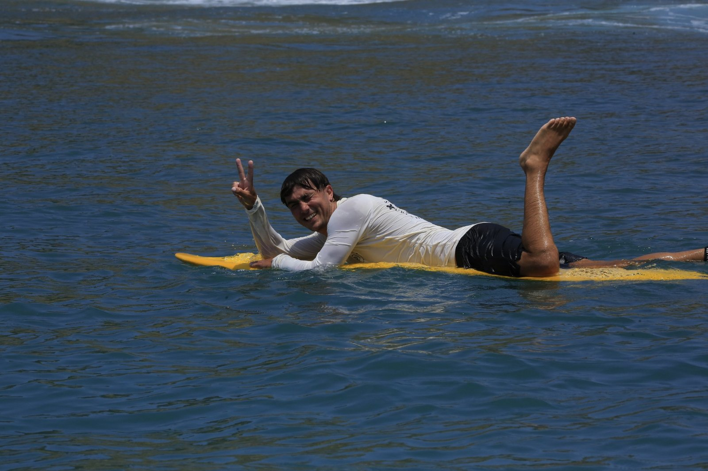
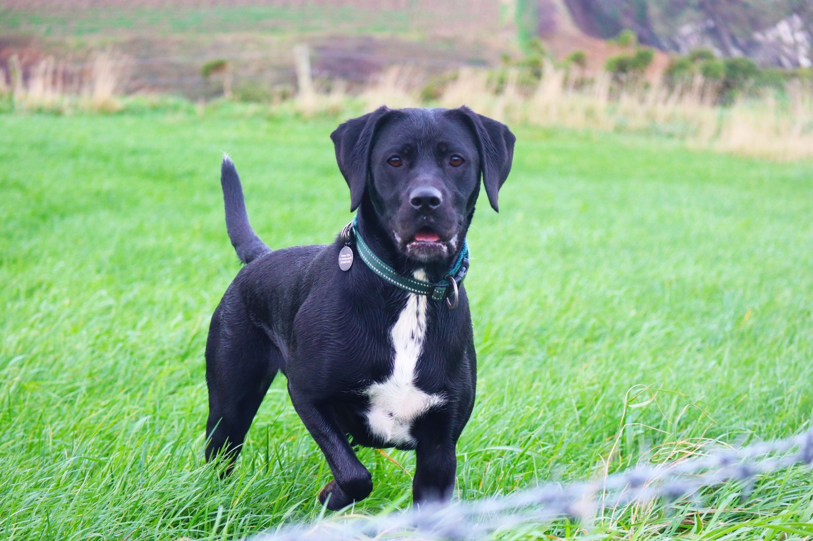

The rest of the picture
I strongly believe my personal life reflects what kind of person I am to hire or work with. I don't think the two sides of this site are as separate as they look. This is where the other half gets some room.

The renovation
I'm partway through a full renovation of a Victorian mid-terrace in Bristol, and it's ambitious! With a small budget and a lot to do, I'm taking on as much as I can myself, learning on the job and bringing in trades only for the specialist work (and friends if takes more than 1 person to lift something!)
See the progress
The van
I'm converting a 2014 Renault Trafic into a proper basecamp for weekends away — surfing, camping, and finding quiet spots to park up around the UK.

Outdoors & active
Surfing, yoga, and staying properly active rather than just gym-active.
Travel
I like travelling independently and sorting the logistics almost as much as the trip itself — most recently a trip to Spain.

Family
Family has and always will be really important to me. It's fairly obvious, but they have truly made me into the person I am. I've included this here, because they are the reason I am so passionate about sustainability and working for a good cause or something that positively contributes to society. I feel very lucky to have parents who installed me and my sister with a sense of social consciousness, ethics and sustainability as well as a critical and creative mindset.
I've also included my family because they (and my friends) are the reason I'm settling down in the beautiful city of Bristol, where I was born and raised. I'm very proud of this city and the wonderful people and communities it creates.
Why this sector, not just this job
Sustainability isn't a professional pose for me — I was raised around it, and it's a big part of why I've built a career in this sector.
ActivismCommunity
I volunteer with Migrateful, supporting migrants and refugees through community integration. Earlier in my career, I helped organise the hikes and community days that built culture at EcoAct while it was still an independent scale-up.
Motion graphics, for the fun of it
After Effects and motion graphics were a personal interest of mine long before they became part of my job, and I still enjoy building templates, lower thirds and stings just for the fun of it.
I'm currently exploring new opportunities in marketing leadership, particularly with sustainability and purpose-driven organisations.
I worked closely with Joe for more than two years on major digital and marketing transformation projects. He is a strategic leader who excels at connecting business goals, customer experience, and technology to deliver meaningful results. Joe has a unique ability to align stakeholders, simplify complex challenges, and drive execution across cross-functional teams. His expertise in digital strategy, marketing technology, analytics, and customer experience, combined with his collaborative leadership style, makes him an exceptional partner for any organization navigating digital change.— Courtney O'Daniel
Joe is a rare find, both creatively gifted and analytical. While some marketers are happy to repeat the same playbook, Joe looks at the data and finds opportunities to truly improve performance. He is curious and will not settle for mediocre results. He is also digitally savvy and able to move quickly at the pace required in the AI era.— Sarah Gregg